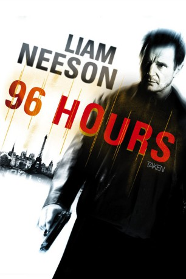
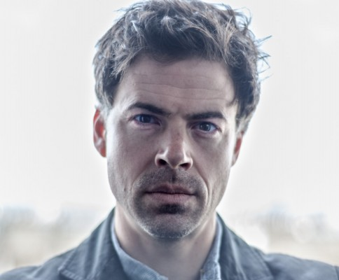

#186 96 Hours - Taken 1
 gesehen am 25.04.2016
gesehen am 25.04.2016
 
 IMDB-Wertung: 7.8 / 10
IMDB-Wertung: 7.8 / 10  Metascore: 50
Metascore: 50 
Bryan Mills hat seinen Dienst als Agent der US-Regierung quittiert, um in der Nähe seiner 17-jährigen Tochter leben zu können. Die verwöhnte Kim wohnt bei Bryans Ex-Frau und deren reichem Mann und Bryan kommt kaum an sie heran. Als Kim mit ihrer Freundin nach Paris fährt, macht sich Bryan Sorgen. Tatsächlich werden die Mädchen dort von einer albanischen Bande entführt. Bryan fährt nach Paris, wo er seine Fähigkeiten als Mann für gefährliche Einsätze voll einsetzen muss.
Jahr: 2008
Dauer: 93 Minuten
FSK: 16
Land: Frankreich Studio: 20th Century Fox of GermanyTonspuren: DTS - ,
Untertitel:
Auflösung: 1080p (1920×816) Größe: 12288 MB
Genre: Action, Krimi, Thriller
Regisseur: Pierre Morel
Drehbuch: Luc Besson, Robert Mark Kamen
Soundtrack: Nathaniel Méchaly
Darsteller:
 Liam Neeson als Bryan Mills
Liam Neeson als Bryan Mills Maggie Grace als Kim
Maggie Grace als Kim Leland Orser als Sam
Leland Orser als Sam Jon Gries als Casey
Jon Gries als Casey David Warshofsky als Bernie
David Warshofsky als Bernie- Holly Valance als Sheerah
 Katie Cassidy als Amanda
Katie Cassidy als Amanda Xander Berkeley als Stuart
Xander Berkeley als Stuart Olivier Rabourdin als Jean-Claude
Olivier Rabourdin als Jean-Claude Famke Janssen als Lenore
Famke Janssen als Lenore Arben Bajraktaraj als Marko
Arben Bajraktaraj als Marko Radivoje Bukvic als Anton
Radivoje Bukvic als Anton- Nicolas Giraud als Peter
 Goran Kostic als Gregor
Goran Kostic als Gregor- Edwin Krüger als Jean-Claude's Assistant
- Anca Radici als Ingrid
-  Nathan Rippy als Victor
- Héléna Soubeyrand als Girl with the Jacket
 Anatole Taubman als Dardan
Anatole Taubman als Dardan- George Hertzberg als Security Stuart's Mansion
- Nabil Massad als Sheik Raman
- Ivette Gonzalez als Maid
 Don Abernathy als Airport Traveler , uncredited
Don Abernathy als Airport Traveler , uncredited- Sophie Chamoux als Bit part , uncredited
- Michael Finn als Airport Pilot , uncredited
- Christina Alice Schmidt als Party Friend , uncredited
- Tamara Witmer als Prostitute , uncredited
- Gérard Watkins als St-Clair
- Marc Amyot als Pharmacist
- Mathieu Busson als Undercover Agent
- Michel Flash als Gio
- Rubens Hyka als Leka
- Camille Japy als Isabelle
- Valentin Kalaj als Vinz
- Fani Kolarova als Prostitute
- Christophe Kourotchkine als Gilles
- Jalil Naciri als Ali
- Tommy Spahija als Nezir
- Bertrand Treuil als Taxi Driver
- Opender Singh als Singh
- Christy Reese als Paper Shop Clerk
- Dan Flood als Airport Traveler , uncredited
- Katrina Forrest als Maid , uncredited
- Jean-Yves Freyburger als Waiter , uncredited
- Stephen Janousek als Party Guest , uncredited
- Alexandra Kedzierska als Call girl , uncredited
Datei: X:\3-Trilogie(A-F)\96 Hours - Taken\96 Hours - Taken 1 (2008, FSK16, 1920x816).mkv seit 02.02.2015
Festplatte: HD Collection-2(A-Z)-3(A-M)
 Alle Filme aus Gruppe '3-Trilogie(A-F)\96 Hours - Taken'
Alle Filme aus Gruppe '3-Trilogie(A-F)\96 Hours - Taken'